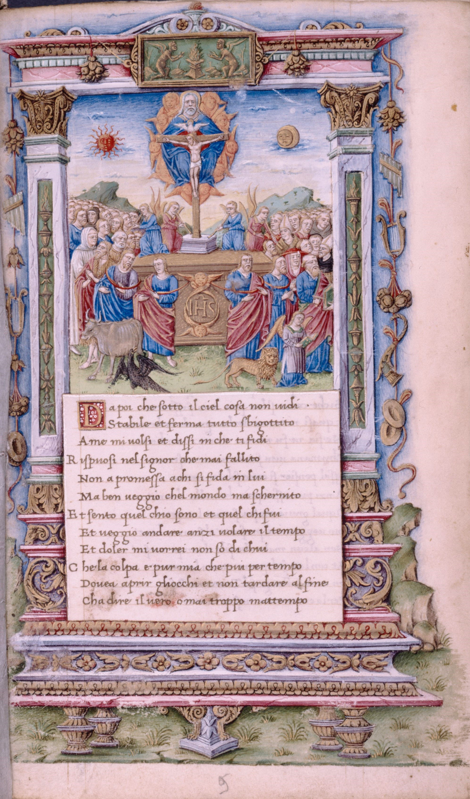

Introduction
Triumphs is a 14th-century Italian series of poems, written by Petrarch in the Tuscan language.
The poem evokes the Roman ceremony of triumph, where victorious generals and their armies were led in procession by the captives and spoils they had taken in war.
This was a popular and influential poem series when it was published.
Composed over more than twenty years, the poetry is written in terza rima.
It consists of twelve chapters ordered in six triumphs envisioned by the poet in a dream honoring allegorical figures such as Love, Chastity, Death, and Fame, who vanquish each other in turn.
Further triumphs are awarded to Time and Eternity.
Composition of the work started in 1351 and the final chapter was last edited on February 12, 1374, a few months before the author's death.
The book was produced in many lavish illuminated manuscript versions, and spawned contemporary panel paintings for cassoni and the like.
▩ 6 Part Structure ▩
The poem is structured in six allegorical triumphs. The triumphs are concatenated, so that the Triumph of Love (over Mankind and even gods) is itself triumphed
over by another allegorical force, the Triumph of Chastity. In its turn, Chastity is triumphed over by Death; Death is overcome by Fame; Fame is conquered by Time;
and even Time is ultimately overcome by Eternity, the triumph of God over all such worldly concerns.
Triumphus Cupidinis: Triumph of Love
One spring day in Valchiusa, the poet falls asleep and dreams that Love, personified as a naked and winged young man armed with a bow, passes by on a fiery triumphal
chariot drawn by four white horses. Love is attended by a multitude of his conquests, including illustrious historical, literary, mythological, and biblical figures, as well as
ancient and medieval poets and troubadours. Eventually the procession reaches Cyprus, the island where Venus was born.Triumphus Pudicitie: Triumph of Chastity
Love is defeated by Laura, Petrarch's unrequited love, and a host of personified virtues such as Honor, Prudence and Modesty, as well as chaste heroines including Lucretia, Penelope, and Dido.
Love's captives are freed and Love is bound to a column and chastised. The triumphant celebration culminates in Rome, in the Temple of Patrician Chastity.Triumphus Mortis: Triumph of Death
Returning from the battle, the victorious host encounters a furious woman dressed in black, who reveals a countryside littered with the corpses of once proud people
from all times and places, including emperors and popes. This personification of Death plucks a golden hair from Laura's head. Laura dies an idealised death, but returns
from heaven to comfort the poet, who asks when they will be reunited in one of the most significant passages of the poem. She replies that he will survive her a long time.Triumphus Famae: Triumph of Fame
Death departs and after Death comes Fame. Her appearance is compared to the dawn. She is attended by Scipio and Caesar, and many other figures from Rome's military
history, as well as Hannibal, Alexander, Saladin, King Arthur, heroes from Homer's epics, and patriarchs from the Hebrew scriptures. Accompanying these soldiers and generals
are the thinkers and orators of Classical Greece and Rome. It has been remarked that for Petrarch, Plato is a greater philosopher than Aristotle, who was preferred by Dante.Triumphus Temporis: Triumph of Time
Time is represented by the sun, chasing the dawn and racing across the sky, jealous and scornful of the fame of mortals. In an elegy on the fickleness of Fame the poet
concludes that it will always eventually be followed by oblivion, the "second death".Triumphus Eternitatis: Triumph of Eternity
Petrarch finds consolation in the almighty God and the prospect of being reunited with Laura in heaven and timeless eternity. Eternity is not represented allegorically.

 Francesco Pesellino: The last three Triumphs of Fame, Time, and Eternity, 1450
Francesco Pesellino: The last three Triumphs of Fame, Time, and Eternity, 1450